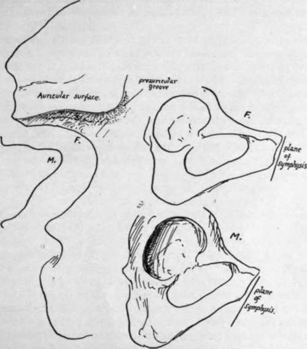

Borders
Description
This section is from the book "The Anatomy Of The Human Skeleton", by J. Ernest Frazer. Also available from Amazon: The anatomy of the human skeleton.
Borders
Crest Of Ilium
Observevthe curved line formed by this crest, and notice that it is thick and lipped in its anterior half or two-thirds. Certain areas can be found on it without much difficulty. It ends behind at the posterior superior spine, and for the first few inches in front of this it presents a blunt edge with sloping surfaces on each side. The inner one of these surfaces presents two areas (Fig. 109), of which the posterior is the larger, slightly convex, and gives origin to Erector spinae: it is separated from the auricular surface by the ligamentous area of the "tuberosity." Anterior to this the Quadratus lumborum has an area of about the same length, but not so deep. These two muscular areas should be definitely recognised on the bone, the Erector slightly overlapping the Quadrate surface, and it can then be seen that the ligamentous areas that lie below them on the inner side of the bone are distinctly in different planes : that below the Erector is for the posterior sacro-iliac ligaments, whereas that below the Quadratus is for the ilio-lumbar ligament. The muscles obtain part of their origin from the ligaments.
* In the figure this is shown very schematically indeed, and no other vessels are represented : as a matter of fact the sciatic and pudic vessels are very variable both in the position of their points of exit and their relations to each other as they leave the cavity of the pelvis.
It may be remarked also that the description of the pelvic fascia? given above is naturally very incomplete-for instance, no mention is made of the double layer above the Levator ani, etc. But from the present standpoint the account given is sufficient to enable the student to place the various structures properly on the bone.
It is now easy to place the other attachments. The crest is described as having inner, middle, and outer lips in its front part, made by the musculo-tendinous attachments of the three large muscles of the abdominal wall. The Transversalis is on the inner lip : traced back, it becomes aponeurotic just outside Quadratus lumborum, and the anterior lamella runs in front of this muscle on to the ilio-lumbar ligament, while the main lamella passes behind it and then between it and the Erector spinae to reach the ligament also, and thus pass to the lumbar transverse processes (Fig. no) (whence the ridge that separates the two muscle areas), and the posterior lamella comes off the main sheet at the outer side of Erector spinae and is attached behind this to the blunt edge, which brings it to the aponeuroses on the back of the sacral musculature (see Fig. no and also Fig. 34). The posterior lamella is thickened by junction with the aponeurotic origin of Latissimus dorsi, but this has a muscular origin further out, behind the Quadratus. Internal oblique takes the middle lip as far back as Quadratus, where it passes on to the Transversalis aponeurosis. External oblique is on the outer lip and ends before reaching the level of Quadratus. Thus the External oblique may be said to take more than the anterior half of the length of the outer lip of the crest, and the other two take less than the anterior two-thirds of the middle and inner lips. External oblique becomes aponeurotic at the anterior superior spine, and Poupart's ligament, the lower edge of the aponeurosis, is attached to the prominent convexity of the spine : its other attachments and the related structures are also shown in Fig. no and a sufficient description given of them.
The whole of the crest, including its two terminal spines, is a traction epiphysis on the bone, developed from anterior and posterior centres that fuse and make a single epiphysis.
Anterior Border
-The Sartorius arises from the notch below the anterior superior spine (Fig. 104). It has Tensor fasciae femoris outside it, and is separated from Iliacus by a thin aponeurosis that passes to the bone from Poupart's ligament and holds up the Iliacus here : the line of this aponeurosis may be picked up on the bone occasionally. The remainder of the border has been already sufficiently considered.
Crest of Pubis : presents from without inwards the spine for Poupart's ligament, a groove for the conjoint tendon, and an area of origin for the Rectus abdominis. It ends at the angle, which has a separate ossific centre that has been homologised with the marsupial " epipubic bone".
Symphysis is coated with hyaline cartilage, which is united with its fellow by an intervening disc of fibro-cartilage : a small cavity, not lined by synovial membrane, is found in the upper and back part of this after the first eight or ten years of life.
The ligamentous markings are weaker behind than in front, where they are strengthened by the origin of the inner heads of the two Recti, which decussate on them.
Fig. 112.-On the left somewhat exaggerated outlines of differences in the posterior borders of male and female bones, showing the more angled notch in the former. On the right the sexual differences are illustrated in the pubic region ; observe that the wider female arch is correlated with a longer pubis, and this, with the relatively smaller acetabulum, makes the breadth of the acetabulum less than the distance between it and the symphysis. Notice the pubic angle formed with the vertical plane.
The pubic arch is below the symphysis; the sub-pubic ligament stretches across below the lower and back aspect of the two bones. The penis turns down from its root about the level of the lower part of the symphysis in the horizontal plane, but its level in planes drawn at right angles to the front of the bones is much higher, the upper line of the curve almost reaching the plane of the top of the symphysis : this is owing, of course, to the obliquity of the bone. The clitoris, in the same way, reaches about one quarter to half the distance up, and the lower edge of the symphysis is only a little in front of the urethra in women.
Continue to: